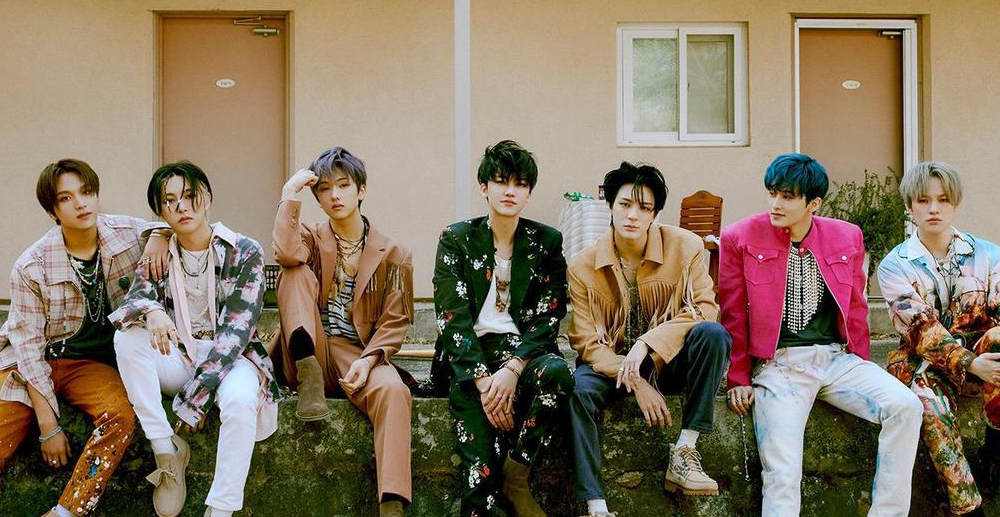

NCT DREAM
Dream為大家展現10代特有的新鮮、活潑的能量和多樣的魅力。 曾採20歲（韓國年齡）即畢業的模式（自2020年4月29日取消）
1.Mark、仁俊、Jeno、楷燦、渽民、辰樂、志晟出道 2.渽民因腰傷而不參與活動，暫時以6人體制活動 3.渽民回歸 4.Mark正式從組合中畢業 5.Mark合流
正規專輯 2021年：Hot Sauce / Hello Future 迷你專輯 2017年：We Young 2018年：We Go Up 2019年：WE BOOM 2020年：The Dream（於日本發行） 2020年：Reload 單曲專輯 2017年：The First 數位單曲 2016年：Chewing Gum
專屬節目 2017年：《NCT LIFE 綜藝修煉會》 2019年：《救救我：SAVE NCT DREAM》 2020年：《NCT LIFE：DREAM in Wonderland》 2021年：《7llin' in the DREAM》 2021年：《少年意志訓練營第二季》 出版物 寫真集 2021年：《DREAM A DREAM ver.1》《DREAM A DREAM ver.2》 廣告代言 2019年 Elite 全員 校服廣告 2020年 CandyLab 仁俊、Jeno、渽民、辰樂、志晟 品牌MUSE 2021年 FCMM 仁俊、Jeno、渽民、辰樂、志晟 品牌聯名代言
演唱會 NCT DREAM SHOW（2018年） NCT DREAM TOUR 'THE DREAM SHOW'（2019年－2020年） NCT DREAM－Beyond the Dream Show（2020年） SHOWCASE NCT DREAM - COMEBACK SHOWCASE 'WE YOUNG' 2017年8月16日 韓國首爾現代MotorStudio高陽店 重要活動 2017年5月20日 FIFA U-20 世界盃KOREA 2017開幕式 全州世界盃體育場 2019年3月12日 K-Wave & Halal Show In Malaysia 馬來西亞吉隆玻萬達廣場 2019年5月2日 C-Festival 2019開幕活動 韓國首爾COEX商場 2019年7月23日 第24屆世界童軍慶祝會 美國西維吉尼亞
Instagram Twitter FaceBook YouTube